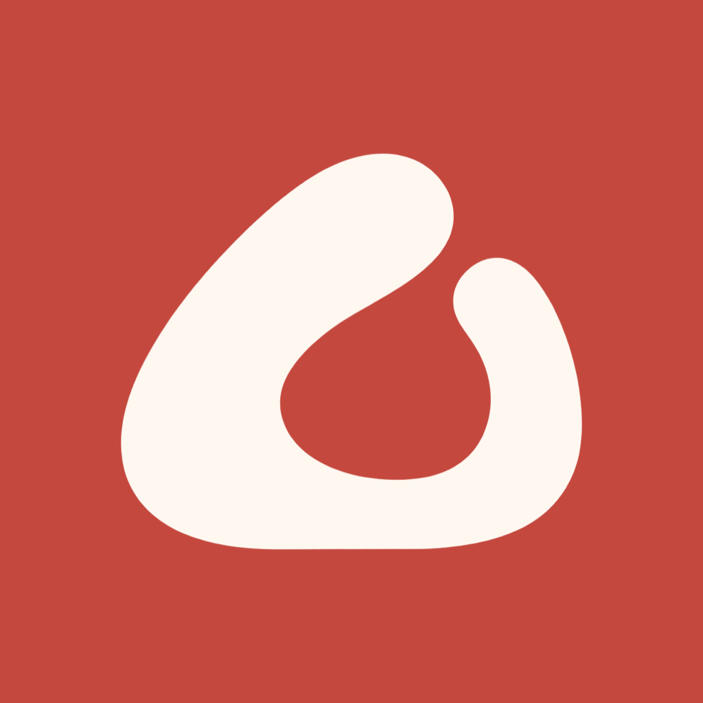

Kucak
Bebeğinizin günlük takibi için sıcak bir alan.
Son güncelleme: 18 Ekim 2026
İletişim
✉️ Bize E-posta GönderinDestek talebinize uygulama sürümü, iOS sürümü ve cihaz modelini ekleyin. Ekran görüntülerinde gereksiz bebek adı, fotoğraf ve sağlık bilgilerini gizleyin. Parola veya ödeme kartı bilgisi göndermeyin.
Hafta içi 1–2 iş günü içinde yanıtlamayı hedefliyoruz.Bilmek İstedikleriniz
Kucak ile neleri takip edebilirim?
Beslenme, emzirme ve sağım, uyku, bez, büyüme, aşı, ilaç dozları, ek gıda denemeleri, gelişim adımları ve hatıraları kaydedebilirsiniz. Yaşa göre haftalık/aylık bilgiler, haftalık özetler, widget ve emzirme Canlı Etkinliği de bulunur.
Verilerim nerede saklanıyor? Hesap açmam gerekir mi?
Ayrı bir Kucak hesabı açmanız gerekmez. Bakım kayıtları cihazınızda tutulur; iCloud kullanılabilir ve eşitleme açıksa kendi Apple hesabınızın özel iCloud alanında cihazlarınız arasında eşitlenir. Geliştiricinin bakım kayıtlarını tuttuğu bir sunucu yoktur. Sizin başlattığınız paylaşım ve destek e-postaları için Gizlilik Politikası geçerlidir.
iCloud eşitlemesi çalışmıyorsa ne yapmalıyım?
iPhone Ayarları’nda doğru Apple Hesabı ile giriş yaptığınızı, iCloud’da Kucak’ın açık olduğunu, yeterli iCloud alanı ve internet bağlantısı bulunduğunu kontrol edin. Uygulamada Ayarlar → Gizlilik ve veri ekranındaki iCloud durumuna bakın. Eşitleme zaman alabilir; yalnızca iCloud’un açık görünmesi bütün kayıtların eşitlendiği anlamına gelmez. Kayıt kaybı riskini önlemek için sorunu çözmeden uygulamayı kaldırmayın veya verileri silmeyin.
Tüm kayıtlarımı nasıl silerim?
Ayarlar → Gizlilik ve veri → Tüm verileri sil yolundan iki aşamalı onayla tüm bebek profillerini ve kayıtları silebilirsiniz. iCloud kullanılamıyorsa seçenek Bu cihazdaki verileri sil olarak görünür. Bu durumda daha önce iCloud’a eşitlenen kopyalar silinmeyebilir; onları da silmek için önce iCloud erişimini yeniden sağlayın. Eşitleme açıkken silme işlemi diğer cihazlarınıza da yansır. Veri silmek aboneliği iptal etmez.
Tek bir bebeğin profilini silebilir miyim?
Ayarlar → Bebekler bölümünde ilgili bebeği seçin; ardından Profili düzenle → Bebek profilini sil yolunu izleyin. O bebeğe bağlı kayıtlar da silinir. iCloud’a yansıması, tüm verileri silme işlemindeki gibi erişim ve eşitleme durumuna bağlıdır.
CSV dışa aktarma tam bir yedek midir?
Ayarlar → CSV dışa aktar, seçili bebeğin beslenme, bez, uyku, büyüme, aşı, ilaç dozu, tamamlanmış gelişim adımı ve ek gıda kayıtlarını dosyaya aktarır. Fotoğraflar, hatıra albümü ve tüm profil bilgileri için eksiksiz yedek değildir; CSV’den geri yükleme özelliği yoktur. Dosyayı paylaşmadan önce içeriğini kontrol edin.
Doktor görüşmesi için PDF özeti nasıl alırım?
Ayarlar → Doktor görüşmesi için PDF özet seçeneğiyle kayıtlarınızdan cihazda bir özet oluşturabilirsiniz. PDF önizlemesindeki menüden paylaşabilir veya AirPrint ile yazdırabilirsiniz. Bu özellik Premium gerektirir; PDF bir tıbbi rapor veya tanı değildir.
Paylaşım kartında hangi bilgiler görünür?
Ay dönümü, Haftamız ve büyüme kartlarında kart türüne göre sunulan ad, fotoğraf, tarih ve imza seçeneklerini yönetebilirsiniz. Kartta görünen ölçüm ve özet değerlerini paylaşmadan önce önizlemeden kontrol edin. Kart cihazda PNG olarak hazırlanır; yalnızca seçtiğiniz uygulamaya paylaşılır veya Fotoğraflar’a kaydedilir. Sade şablonu abonelik gerektirmez; ek şablonların dışa aktarımı Premium gerektirir. Fotoğraflar izni yalnızca oluşturulan kartı eklemek içindir.
Bildirimler neden gelmiyor?
Kucak’ta Ayarlar → Bildirim tercihleri bölümünü, ayrıca iPhone Ayarları’nda Kucak bildirim iznini, Odak ve sessiz saat ayarlarını kontrol edin. Hatırlatıcılar cihazda planlanır; iOS ayarları görünürlüğü ve teslim zamanını etkileyebilir. İlaç ve aşı için tek güvence olarak bildirime dayanmayın.
Kilit ekranında bebek bilgilerim görünebilir mi?
Bildirim önizlemeleri ve widget bebek adı ile bakım bilgilerini gösterebilir. Emzirme Canlı Etkinliği taraf ve süre bilgilerini Kilit Ekranı/Dynamic Island’da gösterebilir. Bildirim önizlemelerini ve Canlı Etkinlik izinlerini iOS ayarlarından yönetin; istemediğiniz widget’ları kaldırın.
Premium hangi özellikleri kapsıyor?
Gelişmiş haftalık karşılaştırmalar, doktor görüşmesi için PDF özet, birden fazla bebek profili, uyku penceresi hatırlatıcısı, hatıra yıldönümü bildirimleri ve ek paylaşım şablonları Premium kapsamındadır. Uyku penceresi tahmini, WHO persentil bantları ve geçmiş kayıtlara erişim abonelik gerektirmez. Güncel plan, fiyat ve varsa uygun deneme koşulları satın alma ekranında gösterilir.
Aboneliğimi nasıl iptal eder veya iade isterim?
iPhone Ayarları → [adınız] → Abonelikler → Kucak yolunu izleyin. Denemenin yenilenmesini istemiyorsanız bitişinden en az 24 saat önce iptal edin. Ücretli dönem erişimi ve deneme bitişi Apple’ın gösterdiği koşullara tabidir. Uygulamayı kaldırmak veya verileri silmek aboneliği iptal etmez. Apple’ın iptal yönergeleri · İade talebi.
Satın alımımı nasıl geri yüklerim?
Satın alımın yapıldığı Apple Hesabı ile App Store’a giriş yaptığınızdan emin olun. Kucak’ta Ayarlar → Satın alımları geri yükle seçeneğine dokunun. Aktif abonelik hâlâ doğrulanamıyorsa bağlantınızı ve Apple abonelik durumunu kontrol edip bize yazın. Uygulama hesabınızı veya bakım kayıtlarınızı silmeniz gerekmez.
İçerikler ve tahminler tıbbi tavsiye midir?
Kucak kişisel bir bakım günlüğüdür. Yaşa göre bilgiler, uyku penceresi, büyüme eğrileri ve aşı tarihleri genel referans niteliğindedir. İlaç özelliği girdiğiniz planı hatırlatır; doz hesaplamaz veya önermez. Sağlık kararları için çocuk doktorunuza başvurun. Kaynak bağlantıları ilgili içerik ekranlarında yer alır.
Bir hata veya özellik önerisini nasıl iletirim?
Sorunun oluştuğu adımları, beklenen sonucu, cihaz ve sürüm bilgilerini e-postayla gönderin. Destek mesajı ve gönüllü eklediğiniz dosyalar bize ulaşır; bakım kayıtlarınıza kendiliğinden erişemeyiz.